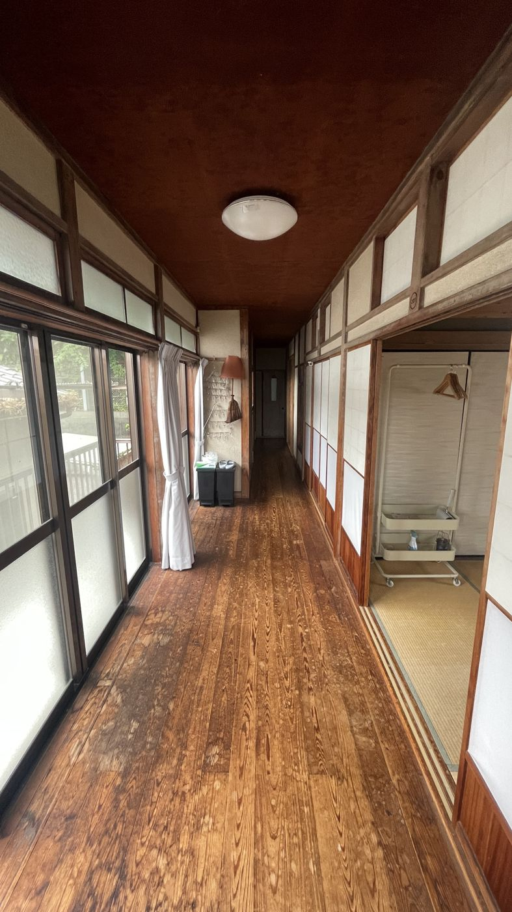

MIURA · STAY GUIDE
三浦A邸 滞在ガイド
来る前・着いたとき・滞在中・帰るときに、ここを開いてください。

試作版（2026年11月）です。住人有志が作っている、三浦A邸の非公式の案内です。「記入待ち」「仮」の札がある所は、家守に確かめてから入れます。公式のルールは、ADDress のヘルプと家守の案内が優先です。
気づいたこと・「あったらいいな」は、作った人に一言ください。
気づいたこと・「あったらいいな」は、作った人に一言ください。
到着前
来る前に見ておくと安心
到着したら
まず家の中を見てみよう


滞在中
三浦をたのしむ